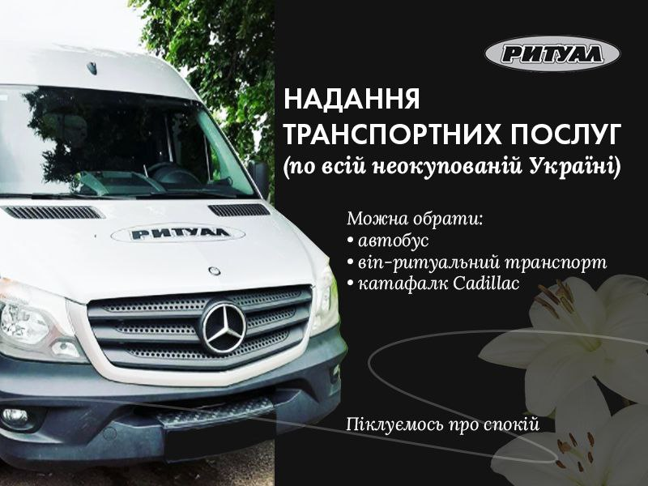

Потреба у перевезенні тіла померлого та родичів може виникнути як при похованні, так й при вивезені тіла на кремацію, священне відспівування. Похоронне бюро “Ритуал” має великий автопарк, де можна вибрати потрібний транспорт та замовити транспортні послуги по всій не окупованій Україні. У нас ви можете обрати:
• автобус;
• віп-ритуальний транспорт;
• катафалк Cadillac;
Весь автотранспорт повністю у справному стані, тому під час транспортування вам не потрібно піклуватися про безпеку та своєчасне прибуття до зазначеного місця.